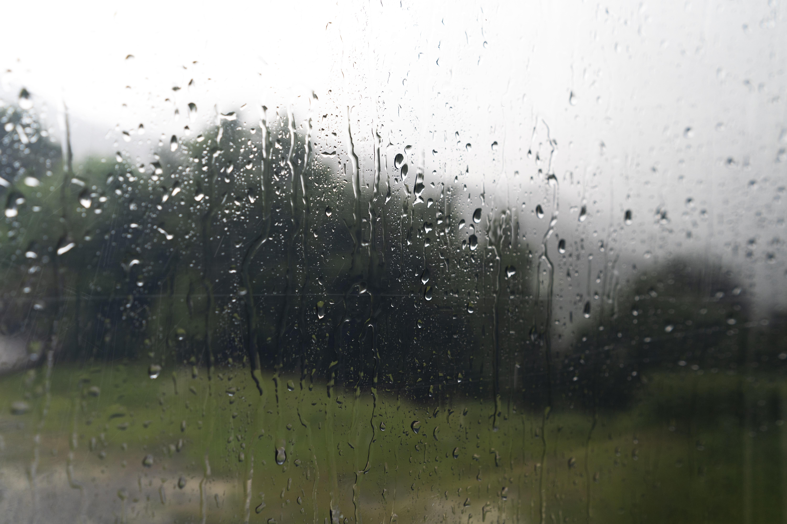
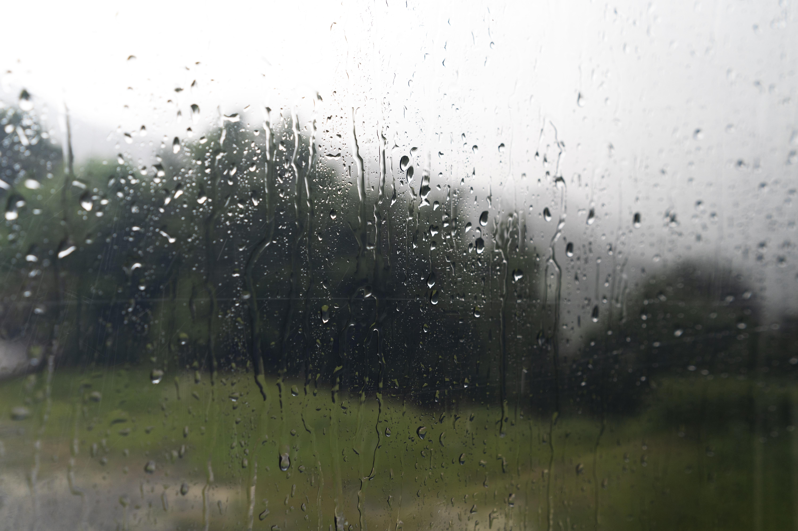

¿Que nos transmite la lluvia? Al llover se transmite al aire carga negativa (ionización) que es la encargada de limpiarlo. Estos iones atraen a los contaminantes que tienen carga positiva, dejando el aire mucho más limpio.
 

¿Cómo se llama el amor por las tormentas? Pluviofilia es un neologismo utilizado para designar a las personas que sienten una especial fascinación por la lluvia y todo lo relacionado con ella.